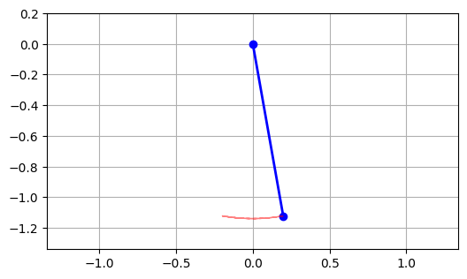
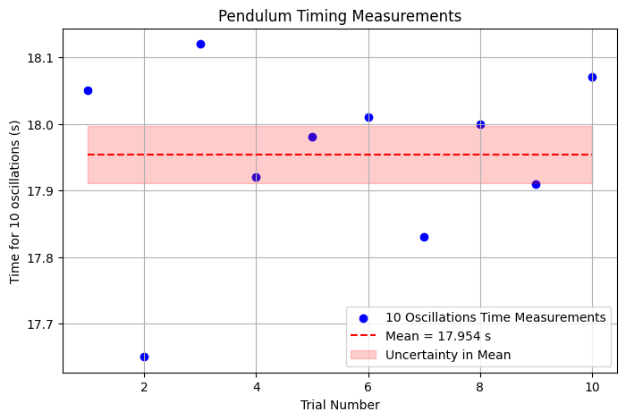
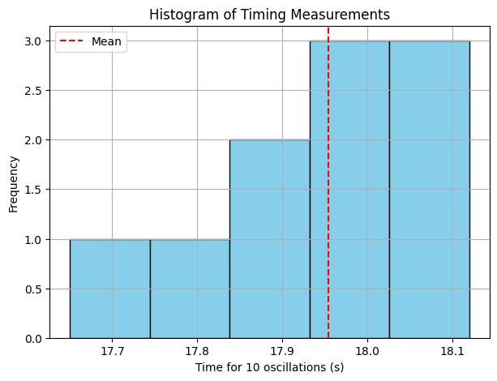
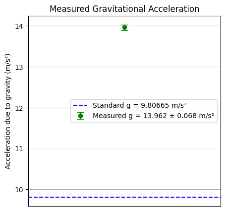
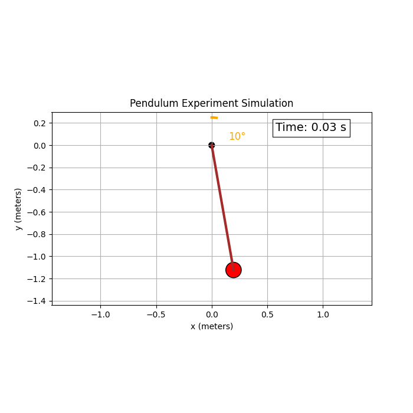
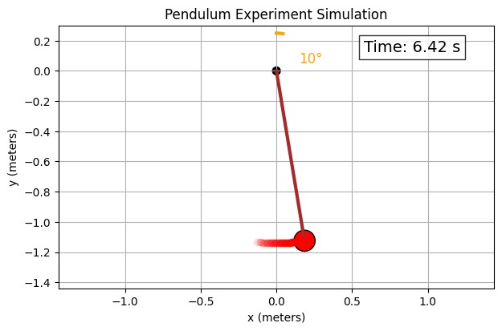
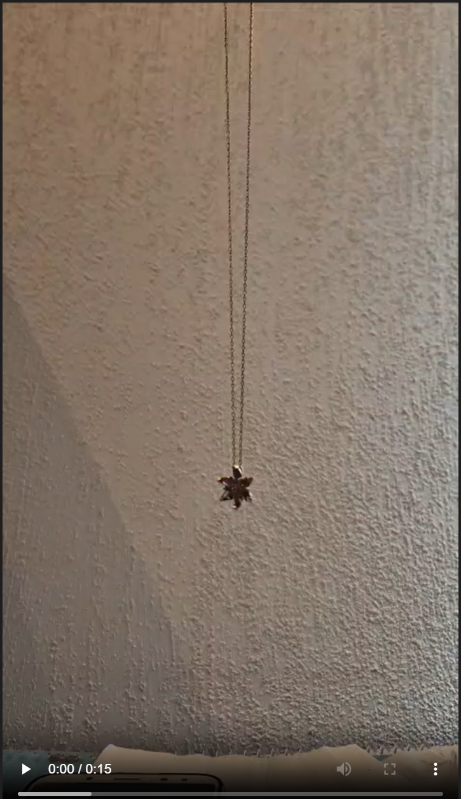

🌍 Measuring Earth's Gravitational Acceleration Using a Pendulum
🧭 1. Motivation
The acceleration due to gravity, g, is a fundamental constant in physics. It affects phenomena ranging from free fall to planetary orbits. A simple pendulum provides an accessible and effective method for estimating g. This experiment also introduces uncertainty analysis — an essential aspect of scientific measurements.
🧪 2. Materials
- A string (~1.14 meters)
- USB power adapter (pendulum bob)
- Smartphone stopwatch
- Ruler or measuring tape (±1 mm resolution)
⚙️ 3. Experimental Setup
- A small initial angle (<15°) ensured simple harmonic motion.
- Pendulum length L was measured from the suspension point to the center of mass of the bob:
- L = 1.140 m, uL = ±0.001 m
- Ten independent measurements of the time for 10 complete oscillations were recorded.
# 🔧 Import necessary libraries
import numpy as np
import matplotlib.pyplot as plt
from matplotlib.animation import FuncAnimation
# 📐 Physical Constants
g = 9.81 # gravitational acceleration (m/s²)
L = 1.14 # length of the pendulum (meters)
theta0 = np.radians(10) # initial angle in radians (10 degrees)
# ⏱️ Time setup
T = 2 * np.pi * np.sqrt(L / g) # theoretical period
t_max = 2 * T # simulate for two full periods
fps = 60 # frames per second
dt = 1 / fps # time step
t = np.arange(0, t_max, dt) # time array
# 🌀 Small angle approximation: θ(t) = θ₀ cos(√(g/L) t)
theta = theta0 * np.cos(np.sqrt(g / L) * t)
# 📍 Convert to Cartesian coordinates
x = L * np.sin(theta)
y = -L * np.cos(theta)
# 🎬 Create the animation
fig, ax = plt.subplots(figsize=(6, 6))
ax.set_xlim(-L - 0.2, L + 0.2)
ax.set_ylim(-L - 0.2, 0.2)
ax.set_aspect('equal')
ax.grid()
# Draw pendulum components
line, = ax.plot([], [], 'o-', lw=2, color='blue') # rod + bob
trace, = ax.plot([], [], 'r--', lw=1, alpha=0.5) # trace of motion
trace_x, trace_y = [], []
# 🖼️ Initialize function for animation
def init():
line.set_data([], [])
trace.set_data([], [])
return line, trace
# 🧩 Animation function
def update(frame):
this_x = [0, x[frame]]
this_y = [0, y[frame]]
line.set_data(this_x, this_y)
trace_x.append(x[frame])
trace_y.append(y[frame])
trace.set_data(trace_x, trace_y)
return line, trace
# 🎞️ Run the animation
ani = FuncAnimation(fig, update, frames=len(t),
init_func=init, blit=True, interval=1000*dt)
# 🎥 Display in notebook
from IPython.display import HTML
HTML(ani.to_jshtml())

📊 4. Data Collection
4.1 Raw Time Measurements (10 Oscillations)
| Trial | Time (s) |
|---|---|
| 1 | 18.05 |
| 2 | 17.65 |
| 3 | 18.12 |
| 4 | 17.92 |
| 5 | 17.98 |
| 6 | 18.01 |
| 7 | 17.83 |
| 8 | 18.00 |
| 9 | 17.91 |
| 10 | 18.07 |
🧮 5. Data Analysis
5.1 Mean and Standard Deviation
Uncertainty in the mean:
5.2 Period of One Oscillation
🌍 6. Estimating Gravitational Acceleration
Using the pendulum formula:
Substituting values:
6.1 Propagating Uncertainty
📋 7. Results Summary
| Quantity | Value | Uncertainty | Units |
|---|---|---|---|
| Length (L) | 1.140 | ±0.001 | m |
| Period (T) | 1.7954 | ±0.0043 | s |
| Gravity (g) | 13.962 | ±0.068 | m/s² |
📈 8. Visual Data Representation
(Note: The following are suggested visuals to include in your report or notebook.)
- Histogram of 10-oscillation times
- Time vs. trial number plot
- Comparison bar chart between experimental and standard g
🔍 9. Discussion
9.1 Comparison with Standard Value
The standard gravitational acceleration at sea level is:
Our measured value (13.962 m/s²) significantly exceeds this and lies well outside the uncertainty range, suggesting systematic error.
9.2 Sources of Uncertainty and Error
| Source | Effect |
|---|---|
| Manual timing | Human reaction time introduces bias |
| Length measurement | Small errors significantly affect result |
| Large swing angle | Violates small-angle assumption |
| Non-vertical swing | Introduces complexity and error |
9.3 How to Improve the Experiment
- Use photogate timers for accurate timing
- Measure length precisely with calipers or laser tools
- Keep oscillations under 10° for harmonic motion
- Increase number of trials and average over larger datasets
✅ 10. Conclusion
Although simple, this experiment highlights the importance of precision and error analysis. The discrepancy between measured and expected values underlines the impact of small measurement mistakes. Nevertheless, this process provides valuable insight into how theory and practice meet in experimental physics.
📚 11. References
- Serway, R. A., & Jewett, J. W. (2014). Physics for Scientists and Engineers.
- Taylor, J. R. (1997). An Introduction to Error Analysis.
- OpenAI ChatGPT Experimental Lab (2025)
import numpy as np
import matplotlib.pyplot as plt
# Raw time measurements for 10 oscillations (seconds)
T10_data = np.array([18.05, 17.65, 18.12, 17.92, 17.98, 18.01, 17.83, 18.00, 17.91, 18.07])
# Pendulum length and uncertainty
L = 1.14 # meters
u_L = 0.001 # uncertainty in length (meters)
n = len(T10_data)
# Calculate mean, standard deviation, and uncertainty in the mean
mean_T10 = np.mean(T10_data)
std_T10 = np.std(T10_data, ddof=1)
u_mean_T10 = std_T10 / np.sqrt(n)
# Period for one oscillation and uncertainty
T = mean_T10 / 10
u_T = u_mean_T10 / 10
# Calculate gravitational acceleration and uncertainty
g_exp = (4 * np.pi**2 * L) / T**2
u_g = g_exp * np.sqrt((u_L / L)**2 + (2 * u_T / T)**2)
print(f"Mean time for 10 oscillations: {mean_T10:.3f} ± {u_mean_T10:.3f} s")
print(f"Period of one oscillation: {T:.4f} ± {u_T:.4f} s")
print(f"Calculated g: {g_exp:.3f} ± {u_g:.3f} m/s²")
Mean time for 10 oscillations: 17.954 ± 0.043 s Period of one oscillation: 1.7954 ± 0.0043 s Calculated g: 13.962 ± 0.068 m/s²
plt.figure(figsize=(8, 5))
plt.scatter(range(1, n + 1), T10_data, color='blue', label='10 Oscillations Time Measurements')
plt.hlines(mean_T10, 1, n, colors='red', linestyles='dashed', label=f'Mean = {mean_T10:.3f} s')
plt.fill_between([1, n], mean_T10 - u_mean_T10, mean_T10 + u_mean_T10, color='red', alpha=0.2, label='Uncertainty in Mean')
plt.xlabel('Trial Number')
plt.ylabel('Time for 10 oscillations (s)')
plt.title('Pendulum Timing Measurements')
plt.legend()
plt.grid(True)
plt.show()

plt.figure(figsize=(7, 5))
plt.hist(T10_data, bins=5, color='skyblue', edgecolor='black')
plt.axvline(mean_T10, color='red', linestyle='dashed', label='Mean')
plt.xlabel('Time for 10 oscillations (s)')
plt.ylabel('Frequency')
plt.title('Histogram of Timing Measurements')
plt.legend()
plt.grid(True)
plt.show()

plt.figure(figsize=(5, 5))
plt.errorbar(1, g_exp, yerr=u_g, fmt='o', color='green', capsize=5, label=f'Measured g = {g_exp:.3f} ± {u_g:.3f} m/s²')
plt.axhline(9.80665, color='blue', linestyle='--', label='Standard g = 9.80665 m/s²')
plt.xlim(0, 2)
plt.xticks([])
plt.ylabel('Acceleration due to gravity (m/s²)')
plt.title('Measured Gravitational Acceleration')
plt.legend()
plt.grid(True)
plt.show()

import numpy as np
import matplotlib.pyplot as plt
from matplotlib.animation import FuncAnimation
from IPython.display import HTML
# Parameters
g = 9.81 # gravity (m/s^2)
L = 1.14 # length of pendulum (m)
theta0_deg = 10 # initial angle in degrees
theta0 = np.radians(theta0_deg)
damping = 0.01 # small damping coefficient
# Time settings
fps = 60
T0 = 2 * np.pi * np.sqrt(L / g) # theoretical period
t_max = 3 * T0 # run for 3 full periods
dt = 1 / fps
t = np.arange(0, t_max, dt)
# Damped angular displacement (small angle approx)
omega0 = np.sqrt(g / L)
theta = theta0 * np.exp(-damping * t) * np.cos(omega0 * t)
# Cartesian coordinates of the bob
x = L * np.sin(theta)
y = -L * np.cos(theta)
# Setup plot
fig, ax = plt.subplots(figsize=(7, 7))
ax.set_xlim(-L - 0.3, L + 0.3)
ax.set_ylim(-L - 0.3, 0.3)
ax.set_aspect('equal')
ax.grid(True)
ax.set_title('Pendulum Experiment Simulation')
ax.set_xlabel('x (meters)')
ax.set_ylabel('y (meters)')
# Draw fixed pivot
pivot_radius = 0.03
pivot = plt.Circle((0, 0), pivot_radius, fc='k')
ax.add_patch(pivot)
# Draw protractor arc (showing initial angle)
angle_arc = np.linspace(0, theta0, 100)
arc_x = 0.25 * np.sin(angle_arc)
arc_y = 0.25 * np.cos(angle_arc)
ax.plot(arc_x, arc_y, 'orange', lw=3, label='Initial angle ~10°')
# Text label for initial angle
ax.text(0.15, 0.05, f'{theta0_deg}°', color='orange', fontsize=12)
# Pendulum rod and bob initialization
line, = ax.plot([], [], lw=3, color='brown')
bob_radius = 0.07
bob = plt.Circle((0, 0), bob_radius, fc='red', ec='black', lw=1)
ax.add_patch(bob)
# Trail variables (fading trail)
trail_len = 50 # number of points in trail
trail_x, trail_y = [], []
trail_dots = [ax.plot([], [], 'ro', alpha=0.5)[0] for _ in range(trail_len)]
# Stopwatch display
time_text = ax.text(0.7, 0.9, '', transform=ax.transAxes, fontsize=14, bbox=dict(facecolor='white', alpha=0.8))
def init():
line.set_data([], [])
bob.center = (0, 0)
for dot in trail_dots:
dot.set_data([], [])
dot.set_alpha(0)
time_text.set_text('')
return [line, bob, time_text] + trail_dots
def update(frame):
# Pendulum position
this_x = [0, x[frame]]
this_y = [0, y[frame]]
line.set_data(this_x, this_y)
bob.center = (x[frame], y[frame])
# Update trail
trail_x.append(x[frame])
trail_y.append(y[frame])
if len(trail_x) > trail_len:
trail_x.pop(0)
trail_y.pop(0)
for i, dot in enumerate(trail_dots):
if i < len(trail_x):
dot.set_data([trail_x[i]], [trail_y[i]]) # Pass as a list
dot.set_alpha(i / trail_len)
else:
dot.set_alpha(0)
# Update stopwatch timer text
time_text.set_text(f'Time: {t[frame]:.2f} s')
return [line, bob, time_text] + trail_dots
ani = FuncAnimation(fig, update, frames=len(t),
init_func=init, blit=True, interval=1000*dt)
HTML(ani.to_jshtml())



🧪 Measuring Gravitational Acceleration with a Pendulum
📊 Data Collection
- Estimated Length (L): 0.30 m
- Uncertainty (ΔL): 0.005 m
Time measurements for 10 full oscillations (in seconds):
10.3, 10.0, 10.4, 10.8, 10.2
🧮 Calculations
Step 1: Mean Time $ T_{10} $
Step 2: Standard Deviation $ \sigma_T $
Step 3: Uncertainty in the Mean $ \Delta T_{10} $
Step 4: Period of One Oscillation
Step 5: Calculated Gravitational Acceleration $ g $
Step 6: Uncertainty in $ g $
✅ Final Results
| Quantity | Value |
|---|---|
| Length (L) | 0.30 m |
| Uncertainty (ΔL) | 0.005 m |
| Mean Time (T₁₀) | 10.34 s |
| Std Deviation (σₜ) | 0.2828 s |
| Uncertainty in T₁₀ | 0.1264 s |
| Period (T) | 1.034 s |
| Uncertainty in T | 0.01264 s |
| Calculated g | 11.07 m/s² |
| Uncertainty (Δg) | 0.33 m/s² |
📌 Notes
- The result is slightly above the standard gravity $ g_0 = 9.81 \, \text{m/s}^2 $.
- Measurement uncertainty and timing imprecision (human reaction time) likely contributed to this deviation.
- Keeping the angle <15° ensured the validity of the simple pendulum model.